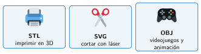

Modelos STL y otros formatos
🤔 Pienso5 min
Qué hago aquí: Piensa un momento y contesta con lo que ya sabes. No pasa nada si no lo sabes: es para empezar.
Un trabajo de clase se puede guardar como documento de texto o como PDF. ¿Cuál usas para seguir cambiándolo? ¿Cuál para imprimirlo?
📖 Leo y aprendo15 min
Qué hago aquí: Lee despacio, mira los dibujos y los ejemplos, y quédate con la idea clave del final.
Tinkercad guarda tus diseños en internet. Para fabricarlos, hay que sacar una copia en un archivo. Esto se llama exportar.
Para guardar una pieza, el ordenador cubre su superficie con muchos triángulos. Esto se llama malla.

✏️ Hago25 min
Qué hago aquí: Haz las actividades en orden. Empieza siempre por las básicas.
Une cada formato con su uso.
| STL • | • Cortar con láser |
| SVG • | • Videojuegos con colores |
| OBJ • | • Imprimir en 3D |
Completa: la superficie de una pieza 3D está hecha de muchos . Eso se llama .
Exporta en STL la arandela de la sesión anterior. Ponle un nombre claro. Escribe aquí el nombre:
¿Qué formato elegirías? Escribe STL, SVG u OBJ.
- Imprimir el vaso en 3D:
- Cortar en madera la silueta de un coche:
- Un personaje con colores para un juego:
¿Por qué hay que guardar el diseño de Tinkercad aunque ya tengas el STL?
✏️ Puedes responder escribiendo, con un dibujo o un esquema, o contándolo en voz alta.
🚀 Amplío (si quieres saber más)
Qué hago aquí: ¿Has terminado? Lee la curiosidad o elige el reto. Es voluntario.
Con tu profesor, descarga un STL sencillo de una de esas webs. Ábrelo en Tinkercad (Importar), añade tu inicial y vuelve a exportarlo. ¿Qué dice su licencia?
✅ Compruebo5 min
Qué hago aquí: Contesta sin mirar la ficha y marca cómo lo llevas.